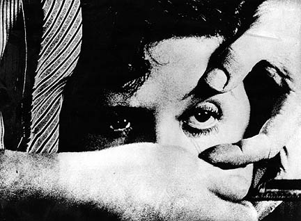

Un proyectil se incrusta en el ojo derecho de la Luna. La Luna tiene rostro. La Luna reacciona.
La escena —entre las más difundidas de los orígenes del cine— dura apenas unos segundos, pero condensa una operación visual precisa. Una cápsula con forma de bala, disparada desde un cañón, atraviesa el espacio y se clava en un rostro humanizado. La Luna, que un instante antes avanzaba hacia cámara con expresión apacible —mediante una combinación de escenografía móvil y sobreimpresión—, se contrae en una mueca. El gesto introduce una discontinuidad: donde había superficie celeste, aparece sensibilidad.
La Luna deja de ser objeto astronómico o motivo simbólico para convertirse en figura animada, heredera de una tradición iconográfica anterior al cine. La Luna con rostro ya circulaba en grabados, caricaturas y representaciones populares del siglo XIX; lo específico aquí es que el dispositivo cinematográfico le confiere duración, gesto y, sobre todo, la posibilidad de ser herida. Méliès la reactiva en clave espectacular, inscribiéndola en la lógica de la féerie: un teatro de ilusiones trasladado al nuevo dispositivo, donde los astrónomos son magos y el cosmos, escenografía.
La dimensión lúdica, lejos de diluir la intensidad de la imagen, la amplifica. El impacto en el ojo no se presenta como tragedia, pero tampoco es neutro: introduce una relación con el astro basada en la intervención. Llegar implica afectar, dejar marca. La Luna deja de ser objeto de contemplación distante para volverse superficie de acción —y esa superficie, notablemente, nos devuelve la mirada.
La asociación entre ojo y Luna, entre visión y vulnerabilidad, reaparece con otra intensidad en Un Chien Andalou (Un perro andaluz), de Luis Buñuel y Salvador Dalí (1929): el film se abre con el corte de un ojo humano en paralelo con una nube que atraviesa la Luna. El montaje no es ornamental. Al yuxtaponer el ojo rasgado con el astro velado, Buñuel y Dalí activan una lógica de equivalencias: lo que se hace al ojo se hace a la Luna; lo que se hace a la Luna se hace a la capacidad de ver. En ambas películas, la Luna es interlocutora. Compartir el plano con ella implica quedar expuesto.

Un perro andaluz, Luis Buñuel y Salvador Dalí, 1929. El ojo rasgado en paralelo con la Luna velada: una lógica de equivalencias.
Hay, sin embargo, un tercer modo de plantear esta relación: la mirada que nos mira, la mirada que vuelve. En Solaris, de Andrei Tarkovsky (1972), la estación espacial flota sobre un océano que lee las mentes de sus tripulantes y les devuelve materializados sus recuerdos más dolorosos. El astro no tiene rostro, pero tiene conciencia. La intervención es interna, silenciosa, retroactiva. El personaje va al espacio a observar el planeta y el planeta lo reconstruye a él. La vulnerabilidad se aloja en la memoria: ver el cosmos implica ser visto por él, y ser visto implica ser alterado.
Tarkovski lleva hasta su consecuencia más radical el problema que Méliès había formulado en clave de espectáculo: la distancia entre quien mira y lo mirado es ilusoria. Todo encuentro con lo celeste deja una marca que no se eligió. El ojo que dispara el proyectil; el ojo que recibe la navaja; la psique que el océano de Solaris lee y reescribe: tres variaciones de una misma pregunta visual, formulada a lo largo de setenta años de cine.
Lo que esta cadena de imágenes pone en evidencia es un problema persistente: cómo representar el acto de ver cuando ver implica siempre intervenir. En Méliès, la intervención es literal; en Buñuel y Dalí, es figural pero no menos violenta; en Tarkovski, es psíquica y diferida. El ojo no es instrumento neutral de percepción: es superficie vulnerable, capaz de ser herida, leída, rehecha. Y la Luna —o su equivalente, el cosmos que la aloja— se vuelve en estas imágenes aquello que devuelve la mirada y la acusa.
A comienzos del siglo XX, la Luna todavía podía tener rostro. Méliès fijó esa posibilidad en una imagen brevísima y persistente: una superficie que mira mientras es mirada, que recibe el impacto y devuelve un gesto. Décadas después, el surrealismo y el cine de autor volverían sobre esa herida desde otros lenguajes. En todos los casos, la Luna deja de ser un dato del cielo para convertirse en figura de un límite: aquello que el ojo desea alcanzar y que nunca toca sin consecuencias. Mirarla, parece decir el cine, es aceptar que también nosotros quedamos expuestos bajo su luz.
Nota iconográfica
La representación de la Luna con rasgos humanos posee una historia larga y precisa anterior a Méliès. En numerosas escenas medievales de la Crucifixión, el Sol y la Luna aparecen personificados a ambos lados de la cruz, en relación con la oscuridad o el eclipse mencionados por los Evangelios en el momento de la muerte de Cristo. Desde la Alta Edad Media y con especial difusión a partir del siglo XII, esta iconografía se consolida en distintas variantes: la Luna, con frecuencia asociada a lo femenino, adopta un perfil facial que la separa del simple disco astronómico.
Durante el Renacimiento, esa tradición se transforma y circula en nuevos soportes. Grabados de Albrecht Dürer y de otros artistas del norte europeo incluyen soles y lunas con fisionomías humanas en contextos religiosos, apocalípticos o cosmográficos. La imprenta multiplicó estas imágenes por toda Europa y las integró al imaginario visual moderno. En esa genealogía se inscriben también las lunas de caricaturas, almanaques y grabados populares del siglo XIX: rostros lunares irónicos, expresivos, teatrales. Ese repertorio visual seguía disponible cuando Georges Méliès diseñó la Luna de Le Voyage dans la Lune, no una invención ex nihilo, sino la reactivación cinematográfica de una figura muy antigua a la que se incorpora movimiento, dolor y memoria.